Dirt & Dust 把你扔进刺激的拉力赛车世界——策略与速度的交汇。组建一支顶级的支援团队，把赛车调校到完美，并做出分秒必争的决策来征服挑战性的赛道。每一次选择都至关重要，你将突破极限，平衡精准与风险以争取胜利。你是否具备将对手抛在身后、赢得终极荣耀的技巧、胆识与决心？比赛即将开始——让肾上腺素飙升！
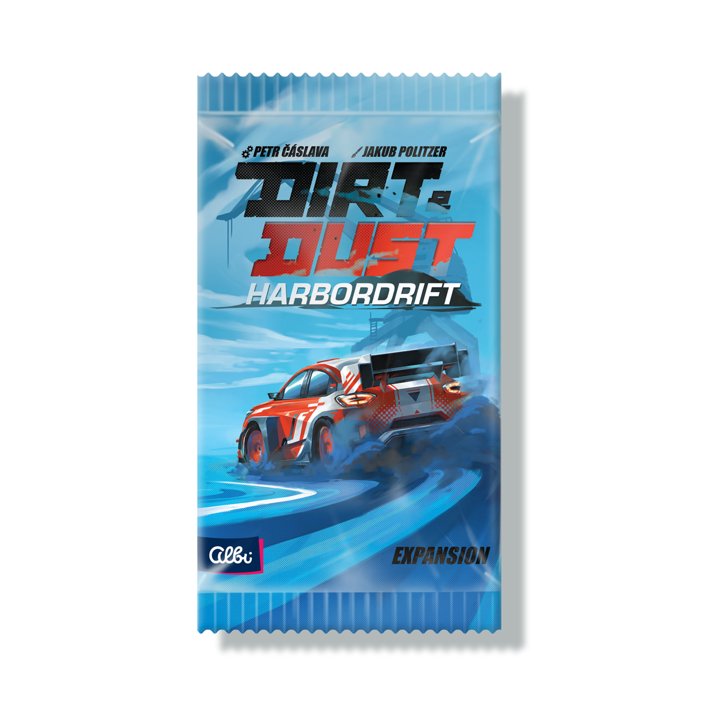
每位玩家有一块板块，用于追踪赛车位置、所受损伤以及持有的资源量。所有玩家板块完全相同。板上分为若干区域：灰区（计速度分、加速、减速、伤害轨道、牵引力、扳手、危险骰槽、永久伤害标记槽、位置区、抽牌堆、人气骰槽、赛道卡组、弃牌堆、人气轨道、速度分轨道、赛道卡槽、激活卡槽）；黄区（计速度分）；红区（计人气分）；以及骰子数值、玩家骰槽等字段。
每位玩家有一块赛车团队板块，用于存放抽牌堆、激活的卡与弃牌堆。这也是放置玩家骰的地方，是玩家的主要操作区。
赛道板块用于追踪速度分与人气分。它还提供空间放置赛道卡组，并展示 6 张面朝上的赛道卡。
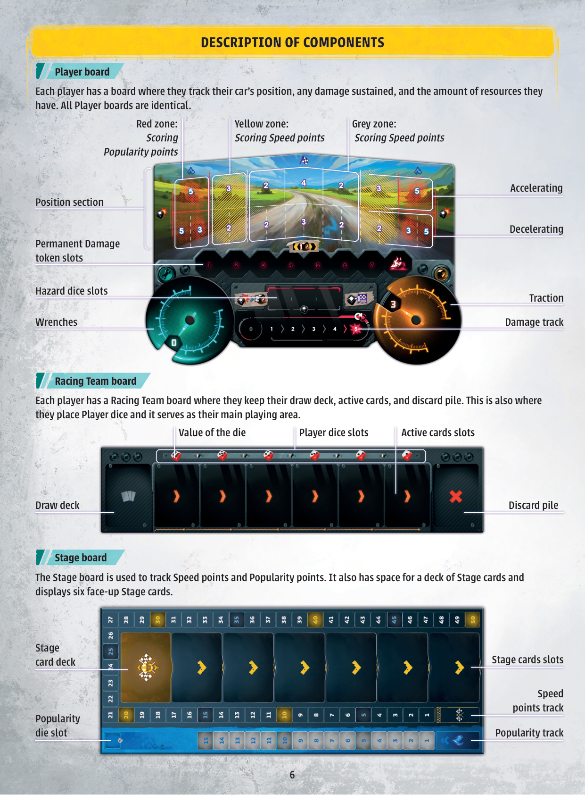
泥土与尘埃是一款以拉力赛为主题的卡牌游戏，玩家通过获取卡牌来组建终极支援团队并将赛车调到完美。游戏以回合进行，每回合中玩家同时完成 4 个阶段。玩家购买卡牌、用骰子激活卡牌效果、控制赛车的速度，平衡加速与减速以最大化卡牌效果收益。他们谨慎选择车道，赚取速度分和粉丝人气分。玩家铺设赛道来收集速度分，必要时修理赛车，并通过大胆操控来推动冲刺，给观众留下深刻印象。
游戏目标是尽可能获得最多的速度分。速度分最多的玩家获胜。
被动效果：支付 2 个人气分，将所有未使用的骰子设为 6。然后将此卡弃入弃牌堆。
被动效果：将你一次掷出的所有危险骰视为空白。然后将此卡弃入弃牌堆。
被动效果：选择 1 张你已移除的卡，打到你的赛车团队板块。获得 1 个人气分。
被动效果：免费获得 1 张花费 1 或 2 扳手的卡，放到你的抽牌堆顶。
每位玩家开局牌组中有 5 张车手卡。这些卡提供玩家可执行的独特效果。车手卡拥有黄色标题底色，所有车手各不相同。
赛车团队卡放在由 9 摞组成的共享展示区，玩家在游戏中进行中可从中购买。这些卡提供多样效果，部分还会在游戏结束时贡献速度分。赛车团队卡分两种：标 A 符号的基础游戏卡，与标 B 符号的扩展游戏卡，两者均以青绿色标题底色便于辨识。
共有 5 副赛道卡，每副 10 张。赛道卡代表赛车道，参与赛道的玩家有机会使用特殊效果，或在驾车转弯时被强制承受惩罚。参与赛道可带来速度分。
每位玩家开局拥有 5 张起始卡，提供可施放的基础效果。这些卡拥有灰色标题底色，右下角标 S 符号，所有起始卡组完全相同。
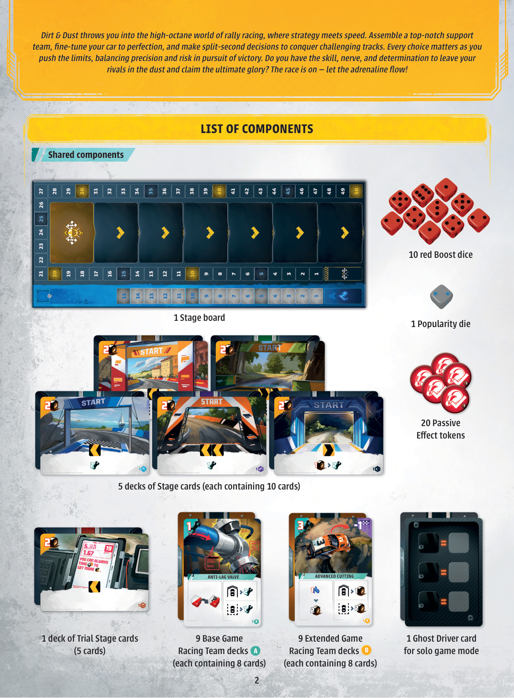
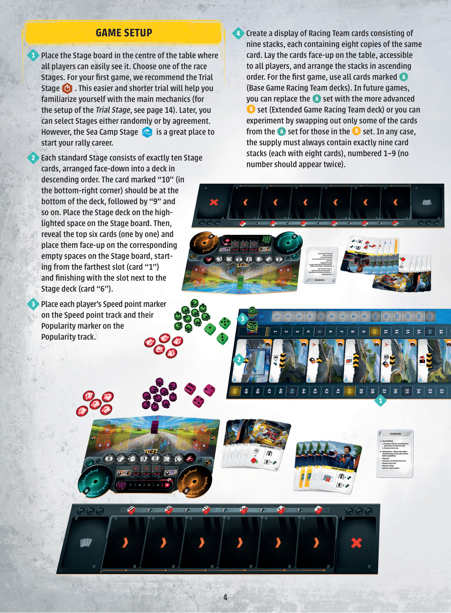
游戏进行若干回合，回合数由赛道卡组中的卡牌数量决定。每回合包含 4 个短阶段，玩家可以同时执行各阶段。当所有玩家完成某一阶段后，才进入下一阶段——如此循环，直到最后一张赛道卡离开赛道板块，触发游戏结束。这 4 个阶段依次是：
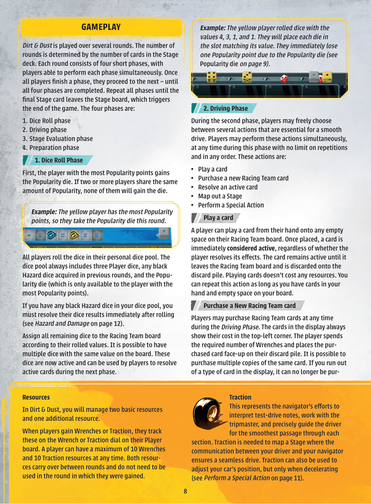
在《泥土与尘埃》中，你将管理两种基本资源与一种额外资源。当玩家获得扳手或牵引力时，在玩家板块的扳手或牵引力刻度盘上记录。玩家任意时刻最多持有 10 点扳手与 10 点牵引力。两种资源都会跨轮保留，不必在获得的当轮用完。
代表支援团队的技艺，包括调校赛车、调整悬挂、选配与充气轮胎、改装差速器等。游戏中用于购买新卡、触发各种效果，以及操作骰子。
代表领航员解读试驾笔记、与计时员协作、精准引导车手顺畅通过每一赛段。用于铺设赛道（车手与领航员的通畅沟通保障无缝驾驶），也可在减速时调整赛车位置。
观众青睐构成的额外资源。获得人气分时，在赛道板块的人气轨道上相应前进。可用于支付某些卡牌效果。掷骰阶段人气分最高的玩家获得特殊的人气骰加入骰池。玩家最多可拥有 15 点人气分。
当你获得一颗红色加速骰，立即掷出并作为玩家骰使用。仅可用 1 轮，须在准备阶段归还共用供应区。
在所有方面视为玩家骰，但只有 1 和 2 两种值，绝不可改成 3 或更高。空白面表示本回合该玩家不结算此骰。重要：掷出人气骰后，你立即扣减等于掷出值的人气分。
注：玩家可能掷出与之前各轮卡牌已占格相对应的骰子值。此时玩家可再次结算那些卡，或执行特殊动作来调整骰子数值。
在第二阶段，玩家可在若干动作间自由抉择，这些动作是顺畅驾驶的要素。玩家可同时执行这些动作，在本阶段任何时刻、以任意顺序、无次数限制地进行。这些动作是：
玩家可从手牌中将一张卡放到赛车团队板块的任意空位。一旦放上，该卡立即被视为激活，无论玩家是否结算其效果。该卡一直保持激活，直到离开赛车团队板块并进入弃牌堆。打出卡不消耗任何资源。只要手牌还有卡、板块还有空位，此动作可重复执行。
【译者注】赛车团队板块的骰子槽与卡槽为上下独立的两行；骰子放在卡位上方的数字槽中。准备阶段卡右移时，未用的激活骰子不随卡移动，而是按准备阶段规则返回个人骰池。
玩家可在驾驶阶段任何时刻购买赛车团队卡。展示区中的卡左上角始终标明其成本。玩家花费所需的扳手数量，将购得的卡面朝上放在自己的弃牌堆。可以购买同一张卡的多个副本。若展示区中某类卡已售罄，则不能再购买。
若多名玩家都想购买某副卡中最后一张，人气分较高者优先；若人气分相同，则速度分较低者优先；若仍相同，则这些玩家本回合均不可购买该卡。
在本阶段任何时刻——即便在打出其他卡之间——只要某张激活的卡上方放有骰子，玩家即可结算它。结算时，玩家把放在所选卡正上方的骰子，从赛车团队板块上方区域移到板块下方，然后以任意顺序结算卡上列出的效果。卡上所有效果必须一次性结算完毕，不可被其他动作打断。
赛车团队板块上可以存在多颗同点数的骰子，这允许玩家多次结算同一张卡。一张卡上的所有效果须完整结算后，玩家才能把另一颗骰子从上方区域移到下方区域、再次激活该卡。所有卡牌效果都是可选的（标有声的例外），玩家可以选择不结算；但若要使用某卡上的效果，必须完整结算。
赛道板块上的每张赛道卡，最左格标明其牵引力成本。玩家花费所需的牵引力，将自己的导航标记放在所选赛道卡上。每位玩家在每张赛道卡上至多放 1 个导航标记（除非特定卡另有说明）。玩家可以按任意顺序铺设赛道；一旦在某张赛道卡上放了导航标记，就必须自上而下逐条结算其效果。赛道卡上的箭头及数字指示赛车在玩家板块上左 / 右移动的格数。
把导航标记放在赛道卡上所需牵引力，等于该卡最左格标明的成本，减去 1（每已放在该卡上的导航标记）。你的赛车按赛道卡上的箭头数字相应移动（左 / 右）。
常见的特殊动作包括：花费牵引力调整赛车位置（含定中心）、花费扳手调整骰子数值、触发被动效果、主动拿取危险骰；此外也可拿取红色加速骰（详见资源与骰子一节）。
若你的赛车正在减速（即位于下排），你可花费 1 点牵引力将其向左或右调整 1 格。可花费多点牵引力进行多次移动，但不能用牵引力在上排与下排之间移动。若你的赛车正在加速（位于上排），则无法花费牵引力调整位置——那种速度下根本没有时间做精细操作。你也可将赛车定中心（移到位置区前排标记为 4 的中央位置）。
花费 1 点扳手，可在驾驶阶段将一颗骰的数值上调或下调 1。只要有足够扳手，可重复进行。但无法仅花 1 点扳手就把值 1 直接改成 6、或值 6 直接改成 1——若确实需要，须花费 5 点扳手。
被动效果由黄底黄盔图标标示。只要卡处于激活状态（即在赛车团队板块上），每回合可自由触发一次，即便卡上方没有骰子。这些效果在同一回合内绝不可多次触发，且骰子对其无影响。为记录本回合已用过的被动效果，触发后在对应卡上放一个被动效果标记。
在驾驶阶段任何时刻，你可主动从自己的供应区拿取一颗危险骰，掷出并立即结算其效果，然后将该骰加入你的骰池供后续各轮使用，直到通过某个游戏效果修理、从而返回玩家板块上的供应区。这代表把赛车推向极限。一旦主动拿取危险骰，你立即获得 2 点牵引力。只要供应区还有危险骰，此动作可重复。注意：若你的骰池已满 3 颗危险骰，则无法执行此特殊动作。
所有效果均为可选，除非标有感叹号——此类必须结算。卡牌效果共有 6 类：无条件效果、基于赛车位置的条件效果、基于赛车所在颜色区域的条件效果、基于特定骰子或骰上特定值的条件效果，以及被动效果。所有卡牌右侧的效果取决于赛车在玩家板块上的位置：上排仅在赛车加速（位于位置区上排）时结算；下排仅在赛车减速（位于位置区下排）时结算。某些效果需要特定骰子（如红色加速骰）或特定数值才能结算；若效果显示一个值为 5 的骰子，则只有显示该值的骰子能结算它。卡牌效果也可能指向玩家板块上特定颜色标记的区域。完整图标清单见本规则书末尾。
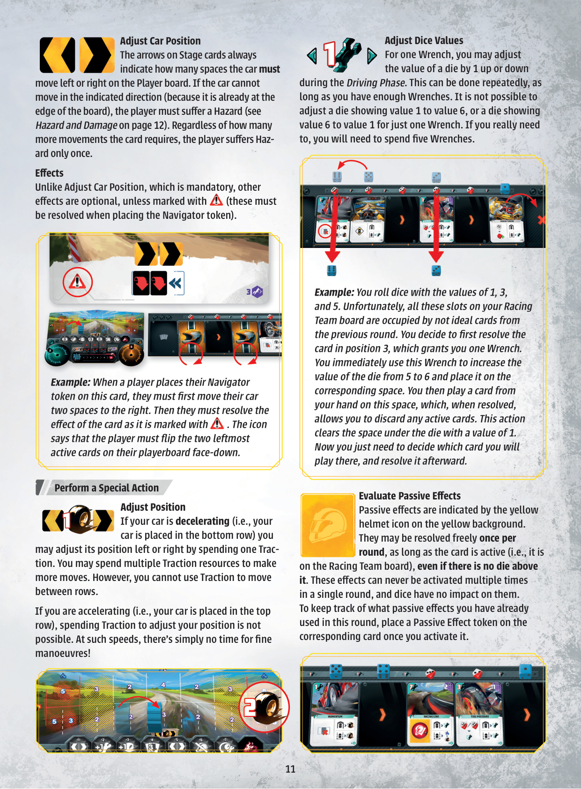
【译者注】原版规则未将“速度点结算”列为一个独立阶段；本节所列“激活骰子 +1、人气第二 +1”实际发生在赛道评估阶段之后，是评估阶段的延伸，并非第 5 阶段。
每个分配到赛车团队板块的激活骰子计 1 速度点。被翻面的卡不计速度点。
【译者注】危险骰在掷出后立即结算，不会被分配到赛车团队板块，因此不计入速度分。
【示例】蓝色玩家在最近一轮有 41 速度分。然后他从卡牌中拿到 4 速度分。因为他骰池里有 2 颗危险骰，所以失去 2 速度分。最后他在人气轨道上以第二名的位置获得 1 速度分。蓝色玩家的最终分数是 44 速度分。
【译者注】此“人气轨道第二 +1”是每轮评估后按人气位置即时获得的速度分；第 13 节终局的“人气第二 +1”是游戏结束时的额外奖励，两者不重复。
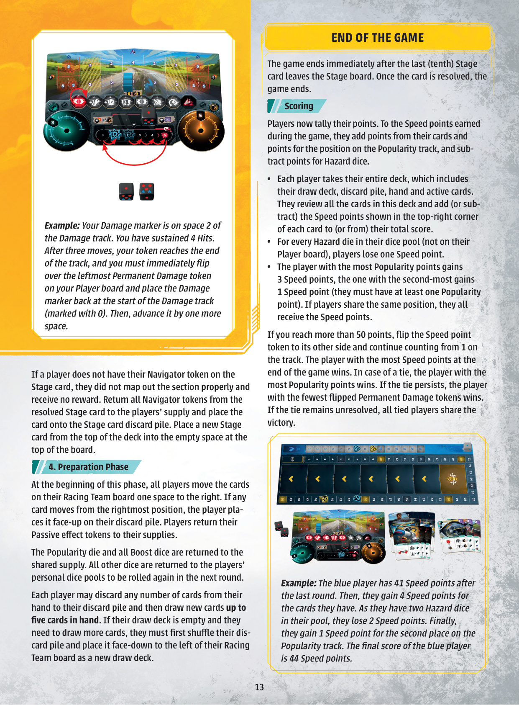
危险骰有 2 种符号：撞车 与 人气。
【译者注】原文未以文字说明危险骰每面的符号数量。根据图例与示例，危险骰每面可同时显示多个符号；掷出后按该面显示的全部符号一并结算。
玩家在游戏中可能遭受危险并造成赛车损伤，最常见的情形包括：赛道卡效果、对赛车的自愿施压、偏离赛道，或冒险操作。当规则要求玩家遭受危险时，玩家从自己玩家板块供应区拿取一颗黑色危险骰，立即掷出并结算其效果。之后该骰加入骰池，并在后续各轮与其他骰子一起掷出，直到通过游戏效果修理。危险骰不用于结算卡牌。危险骰总体上代表赛车承受的潜在损耗，影响车况；玩家板块上的伤害轨道则倒计着赛车走向不可逆摧毁的时间。
最多承受 3 次危险：玩家的骰池中最多可有 3 颗危险骰。若被要求拿取第 4 颗危险骰，则改为掷出并结算骰池中已有的 1 颗危险骰。
对于每个撞车符号，你必须把伤害标记在伤害轨道上右移 1 格。一旦标记到达轨道终点，立即翻开最左侧的未激活永久伤害标记，并把伤害标记放回伤害轨道的起点。从现在开始，你将受到第 18-19 页永久伤害表的描述影响。如果你还有撞车要承受，继续将伤害标记从起点重新移动。
危险骰可在游戏中通过适当效果修理（参见第 20 页游戏图标），但永久伤害会一直跟着你到游戏结束，并显著影响赛车的能力。
每个人气符号将你的人气分标记在人气轨道上前移 1 格。
【示例】你的伤害标记在伤害轨道的第 2 格。你承受了 4 次撞车。经过 3 次移动后，你的标记到达轨道终点，必须立即翻开最左侧的永久伤害标记并把伤害标记放回伤害轨道起点（标记为 0）。然后再前进 1 格。
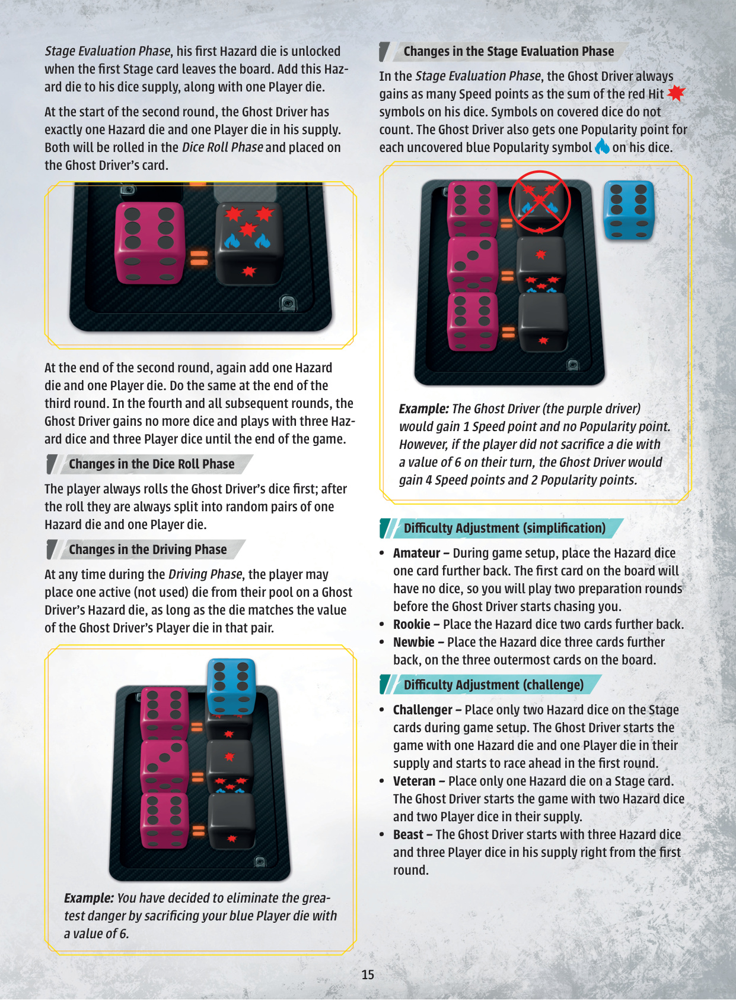
在本阶段开始时，将赛道板块上的所有赛道卡下移 1 格。移出赛道板块的赛道卡立即结算。
结算赛道卡时，玩家检查自己是否在该卡上有导航标记。若有，则根据自己玩家板块上赛车模型下方空格所指示的数字，立即获得相应数量的速度分。
若玩家的赛车位于玩家板块的红区，则获得的是人气分而非速度分（数量如板块所示）。弯道贴得够紧，观众必定沸腾！
如果玩家没有在赛道卡上放导航标记，他就没有正确规划该路段，无奖励。把所有导航标记从该赛道卡上返回供应区，把该卡放到赛道卡弃牌堆中。从牌组顶翻开一张新赛道卡放入赛道板块顶部的空格。
在本阶段开始时，所有玩家把赛车团队板块上的卡右移 1 格。如果卡从最右格移出，玩家把它面朝上放在弃牌堆。玩家把所有被动效果标记返回供应区。
人气骰和所有加速骰返回共用供应区。所有其他骰子返回玩家的个人骰池，准备下一轮掷骰。
每位玩家可以从手牌中弃掉任意张牌，然后补抽到手牌 5 张。如果抽牌堆空了，需要先洗混弃牌堆作为新的抽牌堆。
游戏在最后（第 10）张赛道卡离开赛道板块时立即结束。该卡结算后，游戏结束。
玩家现在结算得分。在游戏中获得的速度分基础上，加上卡牌得分和人气轨道位置分，减去危险骰惩罚：
【译者注】此处“人气最高 +3 / 第二 +1”是游戏结束时的额外奖励，与第 9 节每轮按人气位置获得的速度分不重复。
如果你和孩子们一起玩，或想要更轻松的游戏体验，游戏设置时只揭示 5 张赛道卡。反之，如果你想要更多挑战，开始游戏时让 1 或 2 个永久伤害标记面朝上翻开。
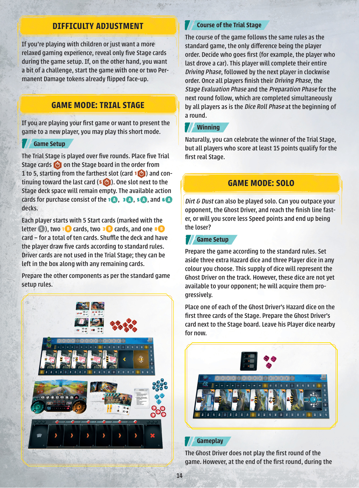
如果你正在玩第一次游戏，或想向新玩家介绍这款游戏，可以玩这个短模式。
试跑赛道玩 5 轮。把 5 张试跑赛道卡按 1 到 5 的顺序放到赛道板块上，从最远位（卡 1）开始到最近位（卡 5）。赛道牌组空间旁边的一个位置保持空位。可购买的行动卡组由 1 A、3 A、5 A 和 6 A 牌组组成。
每位玩家以 5 张起始卡（标有字母 S）、2 张 1 B、2 张 3 B、1 张 8 B 开始——总共 10 张。洗混牌组，玩家按标准规则抽 5 张。车手卡不在试跑赛道中使用，可以和其他剩余卡一起放在盒子里。
游戏流程与标准游戏相同，唯一的区别是玩家顺序。决定谁先手（例如最近开过车的人）。该玩家将完成整个驾驶阶段，然后按顺时针轮到下一位玩家。当所有玩家完成驾驶阶段后，接着是下一轮的赛道评估阶段和准备阶段，按标准规则同时进行。
自然，你可以庆祝试跑赛道的获胜者，但所有得分至少 15 分的玩家都有资格参加第一次真正的赛道。
泥土与尘埃也可以单人玩。你能超越你的对手——幽灵车手，更快到达终点，还是得分更少的速度分成为失败者？
按标准规则准备游戏。另外留出 3 颗额外的危险骰和 3 颗任意颜色的玩家骰。这些额外的骰子代表赛道上的幽灵车手。但是这些骰子暂时还不对手者开放；他将逐步获得。
把幽灵车手的 1 颗危险骰放到赛道上的前 3 张卡上。把幽灵车手卡放在赛道板块旁边。他的玩家骰暂时放在一旁。
幽灵车手不玩第一回合。然而，在第一回合结束时的赛道评估阶段，当第一张赛道卡离开赛道板块时，他的第一颗危险骰被解锁。把这一颗危险骰加到他的骰供应，再加 1 颗玩家骰。
在第二回合开始时，幽灵车手骰供应中正好有 1 颗危险骰和 1 颗玩家骰。两颗都会在掷骰阶段掷出并放到幽灵车手卡上。
在第二回合结束时，再加 1 颗危险骰和 1 颗玩家骰。第三回合结束时同样。第四回合及之后，幽灵车手不再获得骰子，使用 3 颗危险骰和 3 颗玩家骰直到游戏结束。
玩家总是先掷幽灵车手的骰子；掷出后总是随机配对成 1 颗危险骰 + 1 颗玩家骰。
在驾驶阶段的任何时刻，玩家可以从自己的骰池中将 1 颗激活的（未使用的）骰子放到幽灵车手的危险骰上，只要该骰子的值与该配对中幽灵车手的玩家骰匹配。
在赛道评估阶段，幽灵车手总是获得等于他骰子上红色撞车符号之和的速度分。被覆盖的骰子符号不计。幽灵车手也获得他骰子上每个人气符号的人气分。
【示例】你决定通过牺牲你的蓝色玩家骰（值为 6）来消除最大危险。
【示例】幽灵车手（紫色车手）将获得 1 速度分和 0 人气分。但是，如果玩家没有在他们回合中牺牲一颗值为 6 的骰子，幽灵车手将获得 4 速度分和 2 人气分。
现在是 Nick 的回合。他有 3 扳手和 5 牵引力可用，他的赛车在玩家板块位置区的下排。他已经翻开了 2 个永久伤害标记。
Nick 掷骰池中的所有骰子。除了 3 颗玩家骰，他还有 1 颗危险骰，由于目前人气分最高，他也拿取人气骰。
在危险骰上，Nick 掷出 3 个撞车符号和 1 个人气符号。他在各自轨道上把对应标记前移。在人气骰上，Nick 掷出 值 2，把它放到赛车团队板块的"2"号位，并在人气轨道上减去 2 人气分。
在赛道评估阶段，赛道卡"5"离开赛道板块。Nick 在那里有 2 个导航标记。
根据赛车在玩家板块上的位置，每个导航标记 Nick 获得速度分。由于 Nick 的赛车在中段上排，他每个导航标记获得 4 速度分。因此，在本回合 Nick 共获得 8 速度分。
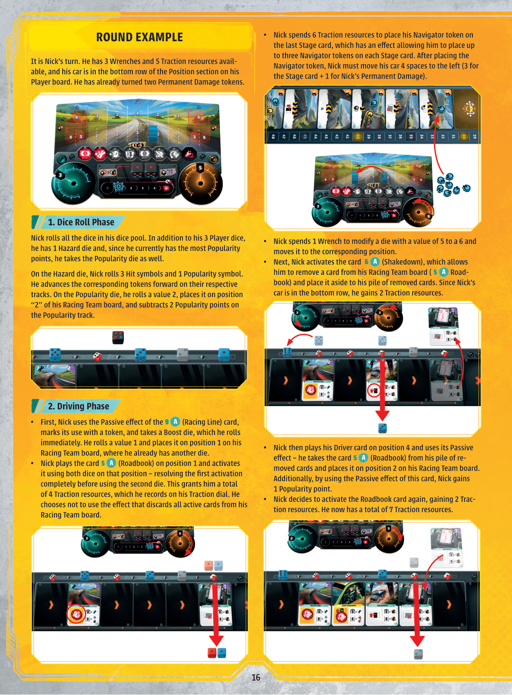
永久伤害标记按从 1 到 7 顺序列出，翻开即生效：
在赛道卡上放导航标记时，赛车左右移动的格数 +1。
卡牌成本 +1 扳手（不影响赛车团队板块上骰子调整的成本）。
在赛道卡上放导航标记的成本 +1 牵引力（不影响赛车位置调整的成本）。
你的手牌上限减为 3 张。
参见永久伤害 #1（效果叠加）。
玩家卡上的被动效果无效。
每回合结束时重置牵引力和扳手刻度盘——你的资源不再带到下一回合。
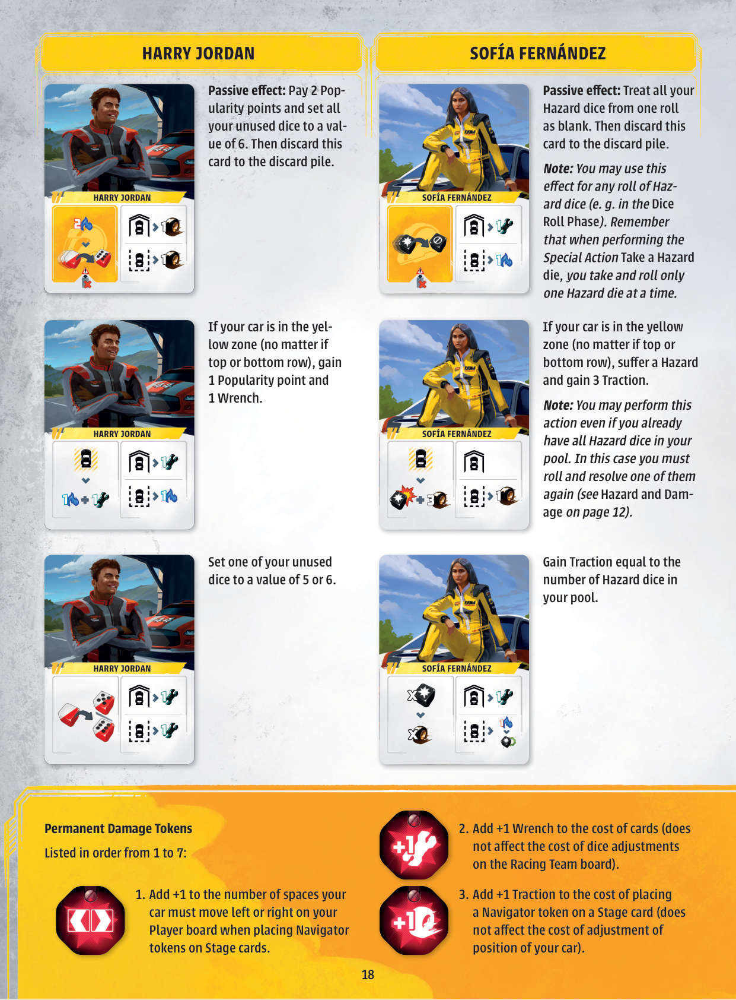
任意骰：图标指玩家骰、红色加速骰和人气骰。
骰池中所有激活的骰子。
用于支付卡牌效果、在赛道卡上放导航标记，或调整赛车在玩家板块上的位置（减速时）。
用于购买新卡、支付卡牌效果，操作骰子。
人气轨道在赛道板块上。准备阶段期间，人气分最高的玩家获得人气骰。
骰池中拥有此骰的玩家。
玩家可用 1 回合。该回合结束时，准备阶段把红色加速骰返回共用供应区。
骰池中的危险骰。
赛车在玩家板块位置区的上排 / 下排。
红区 / 灰区 / 黄区（玩家板块上的位置）。
拿一颗危险骰，立即掷出结算。若供应区空，必须从自己已有的骰子中掷出一颗。
仅当你供应区还有危险骰时，可主动拿并立即掷出结算，获得 2 牵引力。
每回合可随时触发一次，不受玩家骰子影响。
此效果必须结算。
单次掷出的所有危险骰。
把赛车团队板块上最左侧 2 张激活卡翻面（面朝下）。
把任意一张激活卡翻面（面朝下）。
红色轮廓表示支付资源。
支付你所有的人气分。
将一颗激活骰子的值修改 1。
将一颗激活骰子的值设为指定值。
任意骰子值 6。
任意骰子任意值。
拿一颗红色加速骰，立即掷出，作为玩家骰使用。
把赛车放到玩家板块位置区前排标记为 4 的中央位置。
把弃牌堆洗混作为抽牌堆。
把任意激活卡（包括此卡）弃到弃牌堆。
把所有激活的卡弃到弃牌堆。
把此卡弃到弃牌堆。
把最左激活卡翻面（面朝下）。翻面卡如普通激活卡，只是失去效果。
交换任意两张激活卡的位置。
速度调整：赛车可在玩家板块上前后移动。移到下排时，可选对应两个位置之一。
赛车在黄区（上/下排皆可）：获得 1 人气分 + 1 扳手（部分效果）；或承受危险 + 获得 3 牵引力（部分效果）；或弃置任意激活卡；或弃置此卡 + 获得 2 牵引力；获得等于已移除卡数的扳手（最多 3）。
任意已移除的卡：从游戏中拿出。不到弃牌堆，而是放到已移除卡堆。某些车手需要访问已移除卡。
修理 1 颗危险骰（返回玩家板块上的供应区）。
赛车团队板块上空着的位置。
免费获得花费 1 或 2 扳手的卡，放到抽牌堆顶。
骰池中已激活的骰子（未被翻面、未弃掉）。
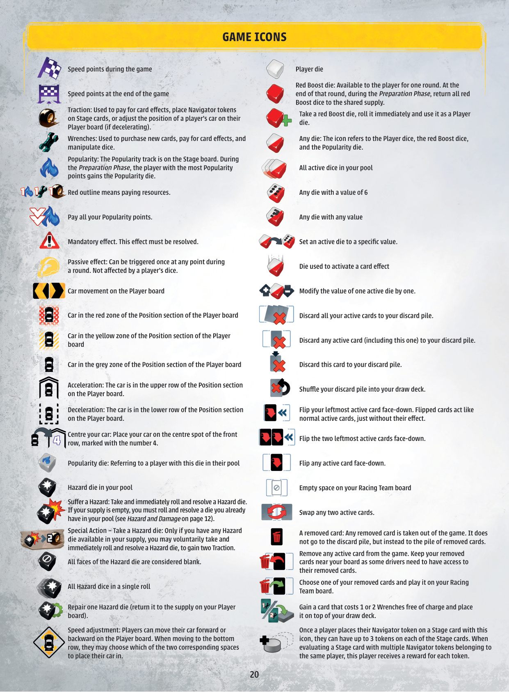
我想把这款游戏献给我的父亲。看，爸爸？我正在兑现我的承诺——我一直在创造新东西。我不可能有别的方式；我像你一样。我想你。
感谢 Ondřej Bystroň，他不断激励我设计游戏并讲述小象的美好故事；感谢 Jakub Politzer，首先要感谢他精彩的插画，也感谢他把游戏当作自己的作品并全情投入；感谢 Ondra Cigánek，他坚持不懈的测试和富有洞察力的反馈；感谢 Tomáš Holek，感谢他所有的游戏、谦逊和乐观精神；以及所有我的家人和朋友。
我也要感谢整个 Albi 团队对我的信任和对我的游戏的支持。我深深感激所获得的机会。
感谢 Albi 的所有最专注的测试者和各种试玩活动：Anežka Bělohoubková、Ján "Harry" Novodomský、Michal Šmíd、Jan Cízner、Barbora Šulcová、David Rozsíval、Libor Pešl、Martin Mravec、Václav Falco Mužík、Matúš Sedlák、Filip Veselý、Michal Požárek、Michal Peichl、Petr Popelka、Petr Vojtěch、Jindra Pavlásek、Adam Španěl、Kentán Anyone、Honza Hykš、Vašek Matyska、Ondra Podlešák、Petr Linhart、Roman Švec、Ondřej Krajča、Lenka Tripesová、Ondra Cigánek、Petr Těšínský、Hynek Palatin。
感谢 Zlín 的 Portal 节、Brnohraní、GameCon 以及 Kolín 的 KODEK 桌游俱乐部的所有玩家。
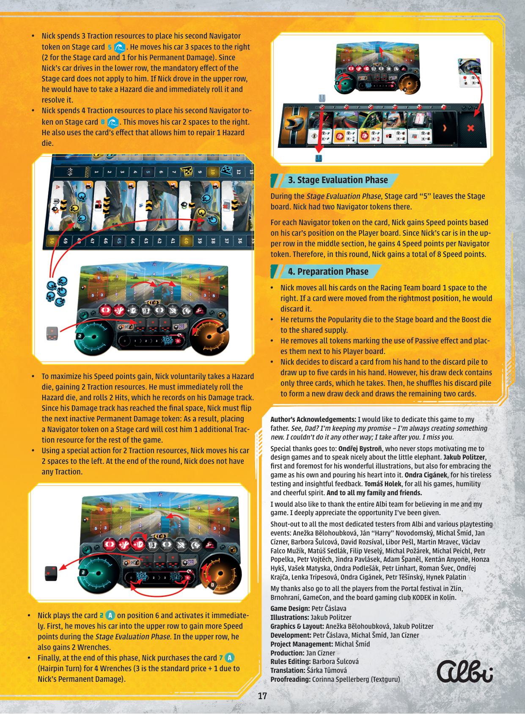
翻译规则严格遵循"专名 vs 普通术语"桌游本地化准则：人名 / 地名 / 公司名保留英文；其他专名（卡牌名 / 能力名 / 大佬 名 / 章节标题 / 制作标签 / 普通术语）全部译为中文。
保留英文的专名：Petr Čáslava、Jakub Politzer、Anežka Bělohoubková、Michal Šmíd、Jan Cízner、Barbora Šulcová、Šárka Tůmová、Corinna Spellerberg、Ondřej Bystroň、Ondra Cigánek、Tomáš Holek、Harry Jordan、Aiko Yamamoto、Sofía Fernández、Ferenc Kovács、Albi、Harry（Novodomský 测试者）。